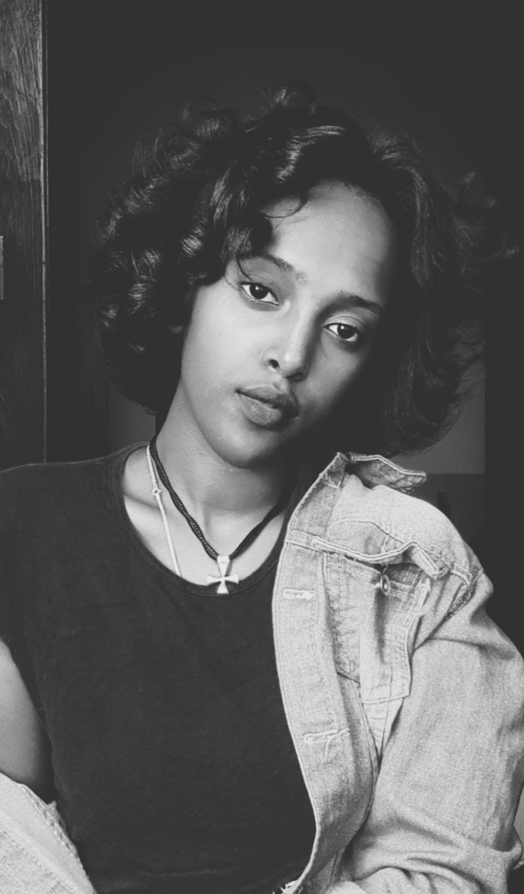
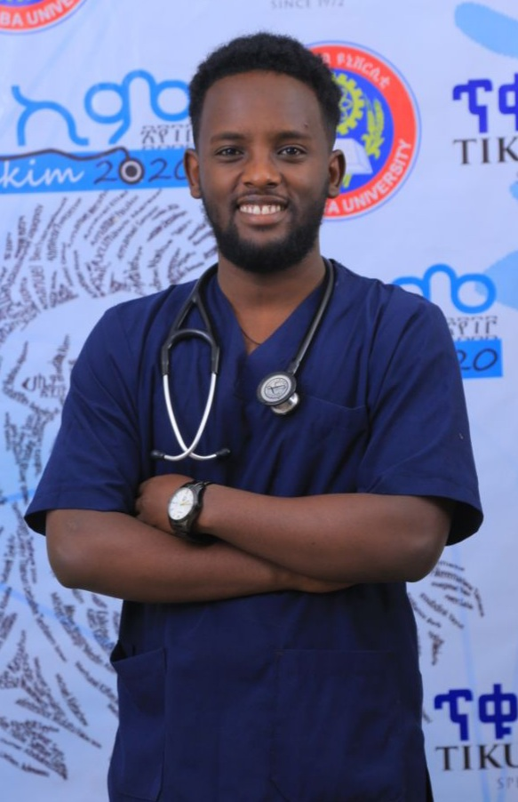
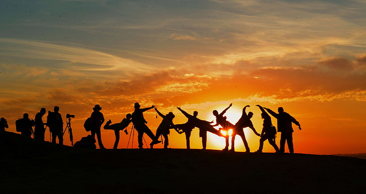

About me
Etsubdink Demeke is a 21 years old Ethiopian woman.I was born in Harar
Ethiopia in 2001E.C.I grew up in Harar.Currently I live in AddisAbaba for educational purpose.I'm creative minded woman who's currently studying software engineering in university of AddisAbaba.Etsub loves to explore new things and help people in any matter.I enjoy heartfelted activities that bring smile on peoples face. I try my best to make this life a better one in my daily movement.Etsubdink is good at creating ,problem solving and addapting into new enviroment
I am the second child for the family of four with one big brother .His name is Dawit Demeke .He is a 26 years old young man who is the best brother in the world.He is intelegent ,supportive.kind and very protective when it comes to me.He has been wooking as a doctor since 2020.My dad's name is Demeke Hailemariam.He is a good father that anyone would die to have.He is a smart hard working and creative person.My mother's name is Yeshihareg Yemiru.She is a good mom and wife.She is my advisor, my bestfriend and my sister to.I'm so lucky to have her in my life.Both parents who are teachers .They have been married for 27 years and they havea accoumplished what most of us fail to accomplish this days.Through all this year they never make us feel any less and they made sure that we were growing in a loving family.These is one of the things that I give the most value in my life


Since I'm selectively sociable person I have a lot of friends I call my family.This are the people that has been there for me at my lowest and know every flaws I have and choose to stick with me.we have passed through ups and downs.These are the type of people I believe that everyone should have in there life to have the best out of life.I have both men and women bestfriends which helps me to have both emotionally supportive and physically protective sides.